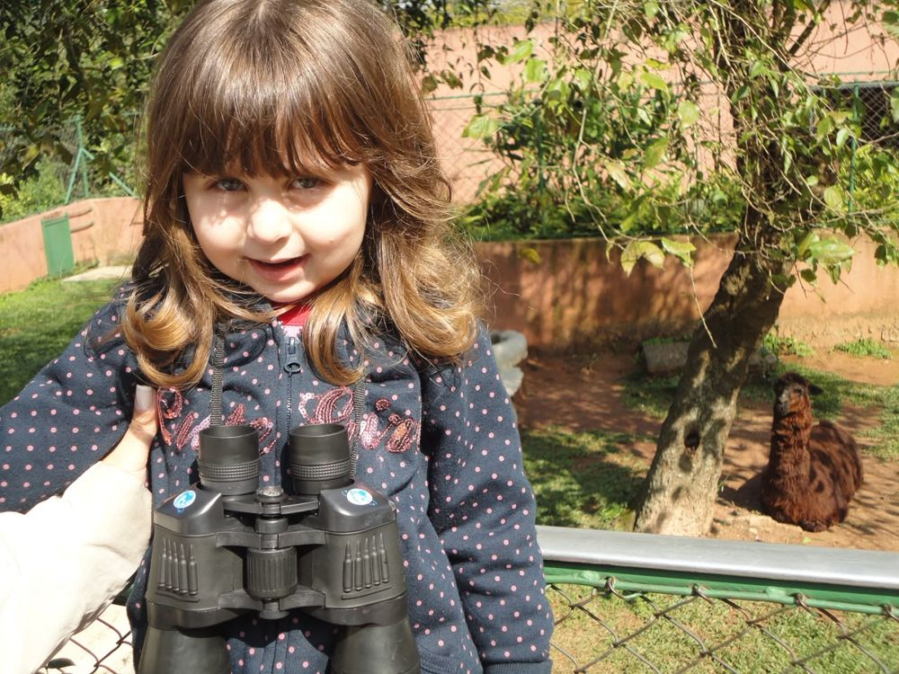
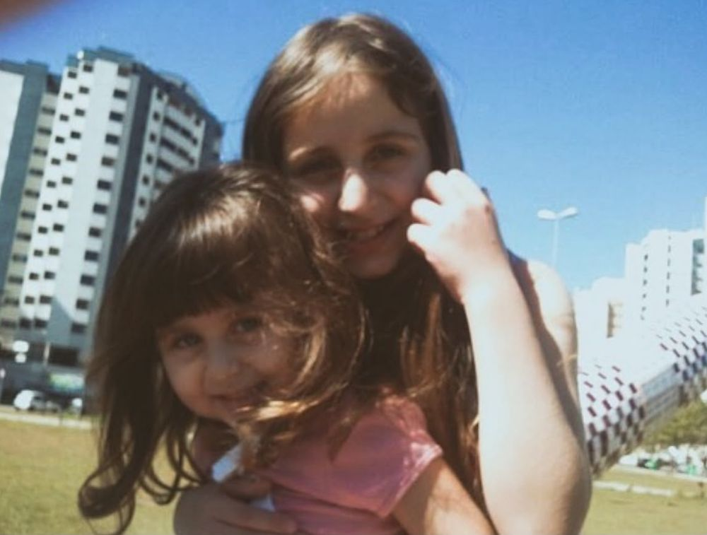
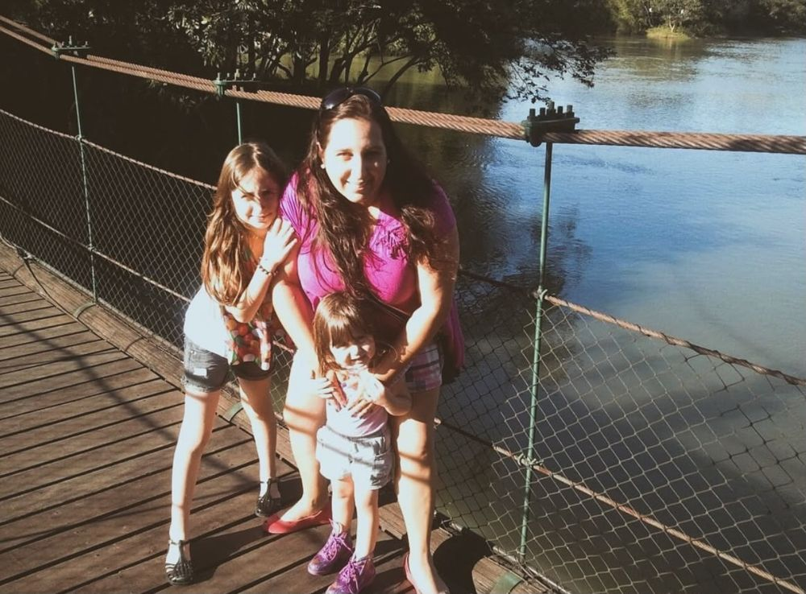
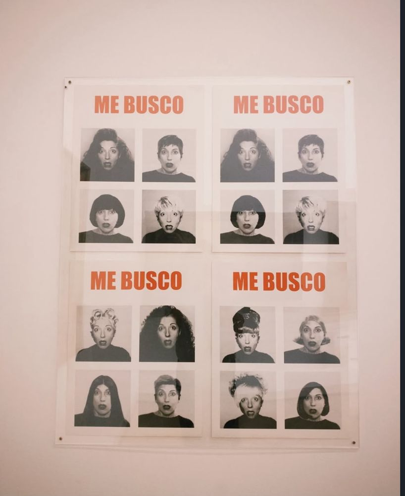
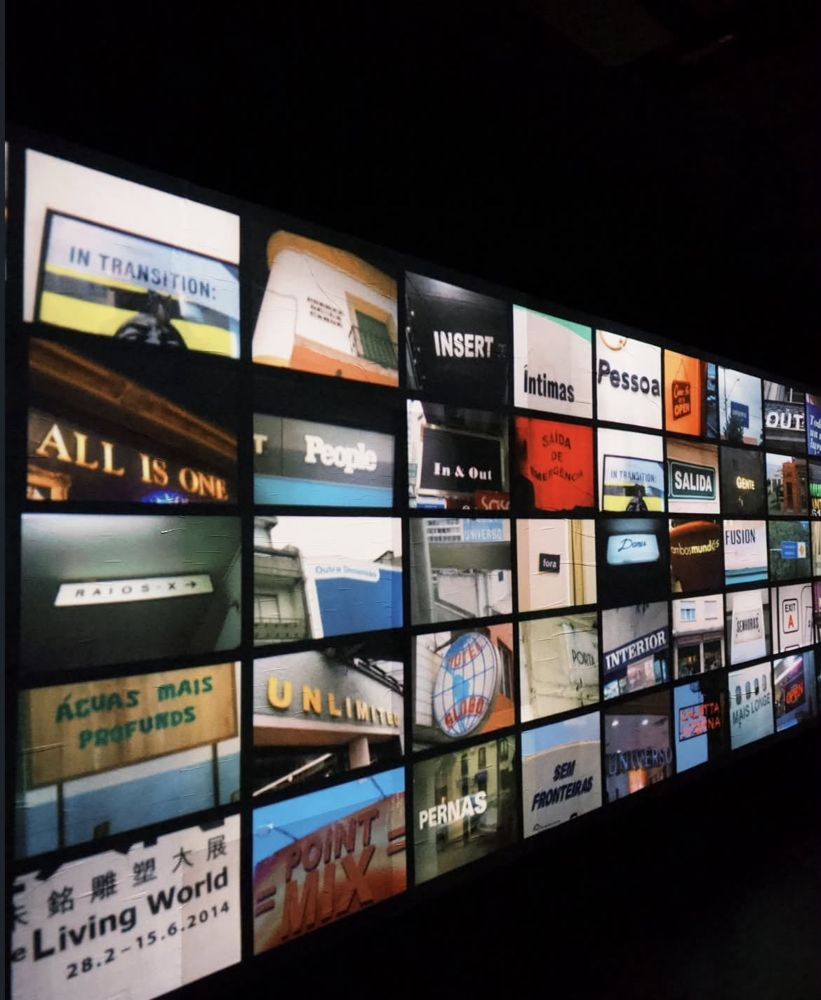
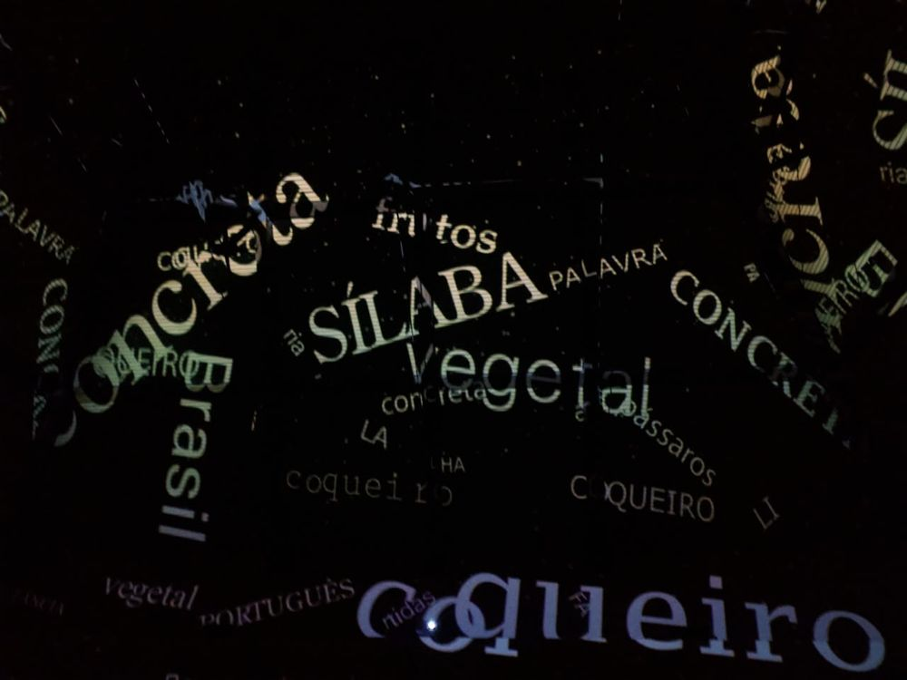
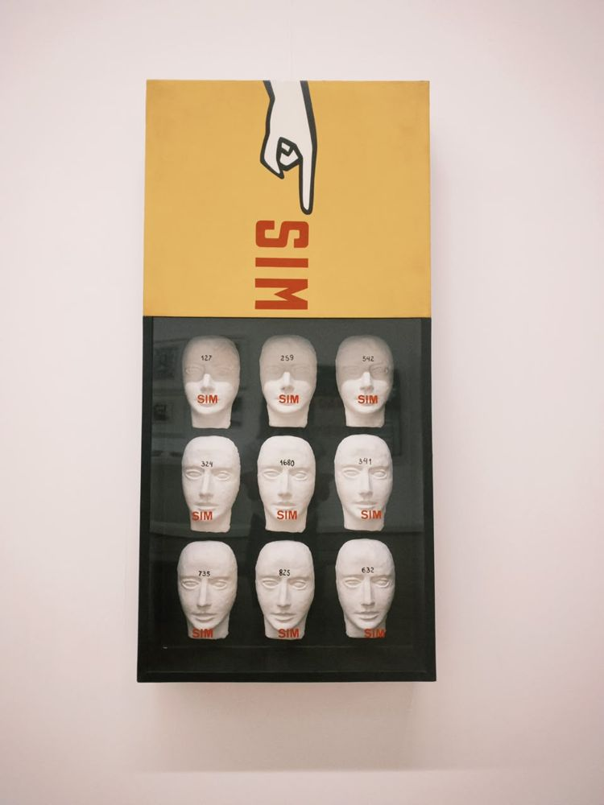
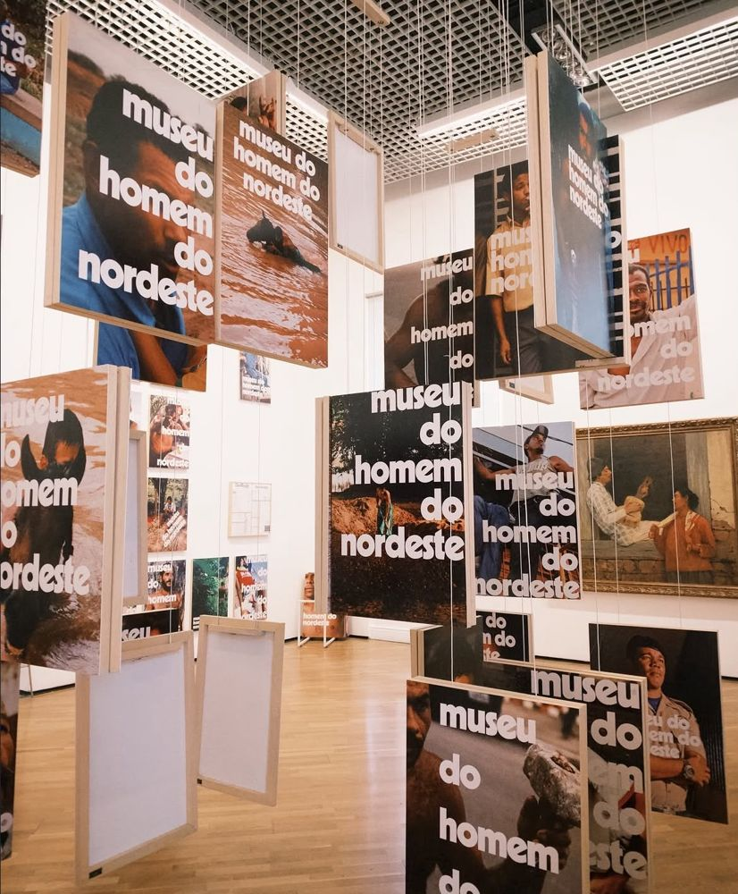
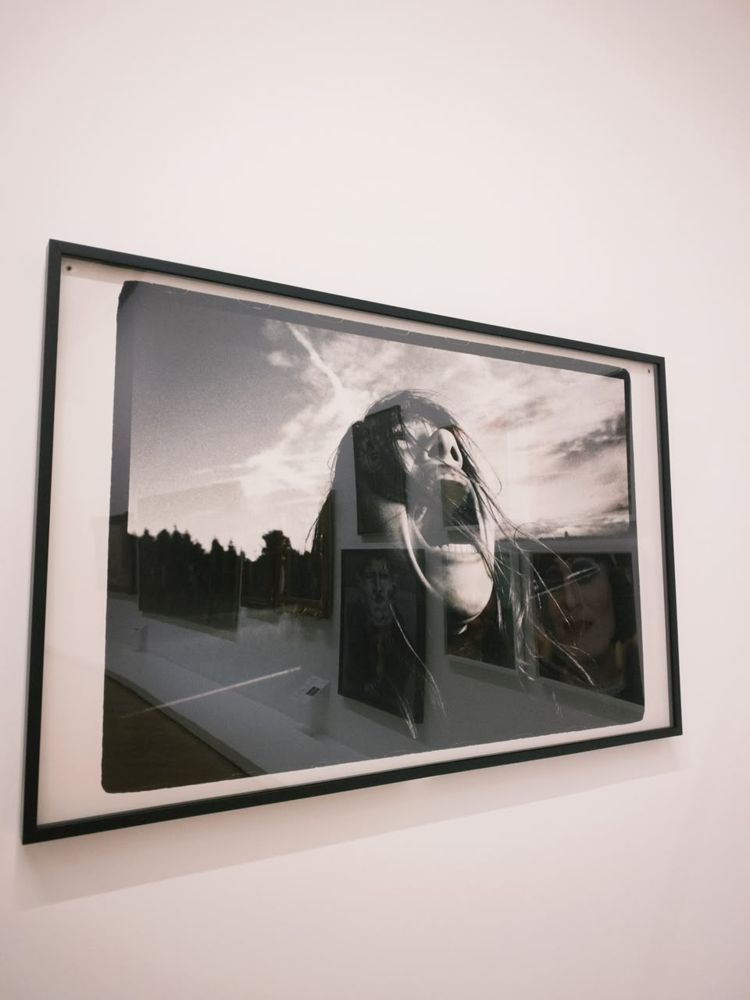

Se você chegou até aqui, senta um pouquinho. Tenho uma história para te contar, e ela começa bem antes do primeiro código.
Capítulo I · Quando eu era pequena
Eu era aquela menina de franja com binóculos no pescoço, querendo ver tudo, até o que não dava para ver. Cresci entre pontes de madeira, flamingos e o abraço da minha irmã e da minha mãe. Tem uma saudade boa nessas fotos: a de quando o mundo inteiro cabia num domingo.
Naquela época eu não sabia o nome do que sentia. Hoje sei: era curiosidade. E ela nunca foi embora.
siga o caminho →



Capítulo II · O que me atravessa
Fui crescendo e descobri que algumas coisas a gente não explica, só sente: um rosto numa parede, uma palavra no escuro, uma pergunta que fica. É nesses lugares que eu me procuro. Quem sou eu? Para onde vou? E o que eu viro quando estou em transição?
É desse olhar que nasce o meu jeito de criar interfaces: com atenção ao detalhe, ao ritmo e a quem vai estar do outro lado da tela.






Capítulo III · Maré
O mar nunca me pediu para ser diferente do que eu era. Ele só vai e volta, e me lembra que recomeçar também é uma forma de coragem. Eu abro os braços, respiro fundo e deixo a maré levar o que pesa.
Do que eu era para o que eu sou
toque nas cartas
Capítulo IV · Linguagem
Hoje estou no 3º ano do Ensino Médio no Sesi e faço o técnico em Desenvolvimento de Sistemas no SENAI de Mogi das Cruzes, no 4º semestre. Entre lógica de programação, orientação a objetos, banco de dados e desenvolvimento web, descobri como transformar ideias em algo que as pessoas usam.
Capítulo V · Minha paixão
Se existe um lugar onde eu me sinto exatamente no meu lugar, é entre dados e inteligência artificial. Gosto de ver um número virar uma história, de entender como uma máquina aprende e de pensar no que isso pode fazer pelas pessoas. Para mim, tecnologia só faz sentido quando tem propósito.
Power BI, SQL e Excel para transformar números em decisões e em histórias que qualquer pessoa entende.
Fundamentos de IA, ética na IA e a API da Claude: aprendendo como as máquinas pensam e como usá-las com responsabilidade.
Da descarbonização ao front-end: quero construir soluções que melhorem a vida de alguém de verdade.
Capítulo VI · Projetos
Cada projeto é um capítulo que eu escrevi com código: sites para pessoas reais, um universo de jogos feito em equipe e uma loja virtual. Clique em um deles para abrir.
Site profissional para uma médica nutróloga: apresentação, áreas de atuação, como funciona a consulta, venda de e-book e agendamento direto pelo WhatsApp.
abrir projeto ↗Portfólio para uma criadora de conteúdo e estrategista UGC: formatos de entrega, números de audiência, marcas parceiras e vídeos que abrem direto no Instagram.
abrir projeto ↗Um baú de memórias para relembrar os personagens da infância: catálogo, escolha de avatar e jogos. Feito em equipe, com Aisha e Heloisa.
abrir projeto ↗Layout de loja virtual de roupas, com lançamentos, categorias masculino e feminino e uma coleção de inverno.
abrir projeto ↗O próximo capítulo vai nascer de uma pergunta nova.
+Capítulo VII · Horizonte
Quero crescer em tecnologia, com foco em dados, inteligência artificial e inovação, e construir soluções que gerem impacto real. Quero que o que eu criar faça alguém olhar mais longe, como eu olhava, de binóculos, quando era pequena.